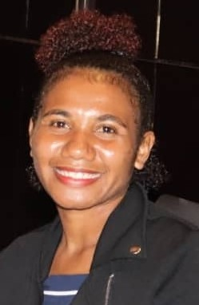

MISS. VANERE EGORA
– C/-Mr. Waname Egora - Pharmacy Technician | Port Moresby General Hospital | P.O. Box 111 | BOROKO | National Capital District |
| Papua New Guinea | Phone: 3248212/73054423 |
PERSONAL DETAILS:
Name: VANERE
Surname: EGORA
Date of Birth: 11th MAY, 2000
Gender: FEMALE
Marital Status: SINGLE
Religion: UNITED CHURCH
Currently Living: 5 MILE
Place of Origin: KAREKODOBU | RIGO DISTRICT | CENTRAL PROVINCE
Languages: ENLISH, PIDGIN & MOTU
Nationality: PAPUA NEW GUINEA
Contact Details:
- Digicel +(675) 73955743
- B/mobile +(675) 77396731
- G-mail: | vaneregomuna@gmail.com.pg
Objectives and Skills
I am a highly motivated and enthusiastic person. I have the desire to learn and help in your company my strengths include excellent
communication as well as the ability to learn and work as an individual. I am honest, reliable and trust worthy.CARRIER OBJECTIVES
SHORT TERM OBJECTIVES:
To serve on full time basis with a forward moving organization with a Solid performance and future projections. As part of a team,
I want to Add value and continue to grow with the organization. Be success in my chosen field, I can achieve this by committed,
self-discipline and hard working.LONG TERM OBJECTIIVES:
This depends on where the organization goes in the long run. I plan to work extra hard in order to move into position of responsibility
where I can lead a team of professions. Be innovative creative, and efficient in my personal carrier development.
EDUCATIONAL BACKGROUND
PRIMAY & SECONDARY:
2007 - 2016 DAGONA PRIMARY GRADE (8) CERTIFICATE 2017 - 20218 KWIKILA SECONDARY GRADE (10) CERTIFICATE 2019 - 2020 KWIKILA SECONDARY GRADE (12) CERTIFICATE TERTERY: SELF SPONSOR
Port Moresby Business Collage : Institute
[2022 - 2023] The study I took was Diploma in Business Studies (HRM). Obviously, I complete all the yearly subjects, semester one/semester two,
and got award of Diploma in Business Studies (Human Resource Management) certificate. Actually, HRM is my course Carrier objective that will determine me to compete
well in this model error. I assure you with the transcript that vary my final results of all the business studies that I took up.JOB EXPERIENCES
Nile in job experience:
But I feel thousand capacities spring up in me to contribute to the company ongoing success.
Other Personal Information:
Interested/Hobbies –talking openly with different people and friendly, attending fellowship, playing sports, watching movies,
reading books and listening music.
Referees:
Waname Egora | Guidance | Pharmacy Technician | Port Moresby General Hospital |
Contact: +675 73054423/ +675 75961699
Email: wanameegoragomuna@123gmail.com.pgMrs. Doris M | HOD | Department of Higher Education, Research, Science |
| Port Moresby Business Collage |
PH: 32502233/ 3253792/ 3252356 Email:Mr. Leval John| Lecturer | Department of Higher Education, Research, Science |
PH: 32502233/ 3253792/ 3252356/ 74308312
Email: